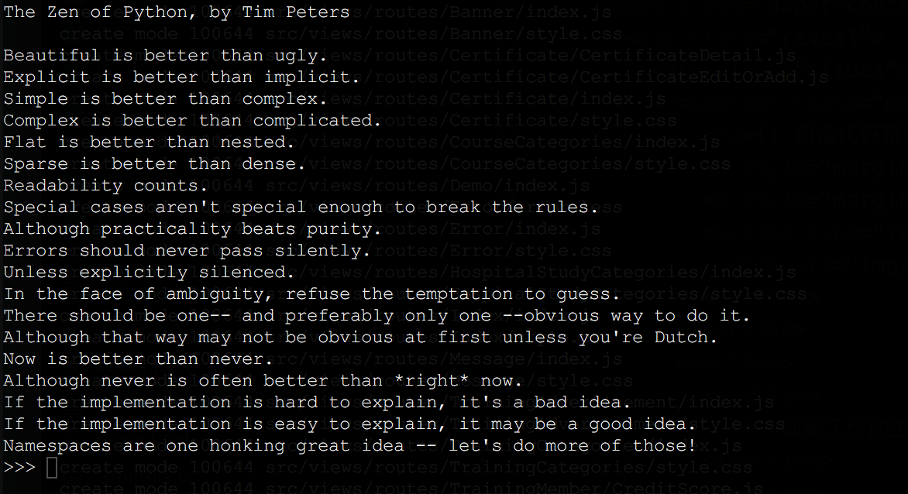

{{ 前端代码审核原则 }}
2018/11/02
Beautiful is better than ugly.
美胜于丑陋（编写`美`的代码为目标）
Explicit is better than implicit.
明了胜于晦涩（代码应当是明了的，命名规范，风格相似）
Simple is better than complex.
简洁胜于复杂（代码应当是简洁的，不要有复杂的内部实现）
Complex is better than complicated.
复杂胜于凌乱（如果复杂不可避免，那代码间也不能有难懂的关系，要保持接口简洁）
Flat is better than nested.
扁平胜于嵌套（代码应当是扁平的，不能有太多的嵌套）
Sparse is better than dense.
稀疏胜于密繁（代码应当是扁平的，不能有太多的嵌套）
Readability counts.
可读性很重要（代码是可读的）
Special cases aren't special enough to break the rules.
Although practicality beats purity.
即便假借特例的实用性之名，也不可违背这些规则。
虽然，实践胜于理论。
Errors should never pass silently.
Unless explicitly silenced.
不要放过一切错误，除非错误本身需要以忽略对待 (Sentry 的开发环境调试告警丢失？？捕获了，而不处理它。)
In the face of ambiguity, refuse the temptation to guess.
不确定性面前，我们应抵挡妄加猜测的引诱
There should be one-- and preferably only one --obvious way to do it.
不确定性面前，我们应抵挡妄加猜测的引诱
应该有一种，也但愿只有这一种是显而易见的解决之道。
Although that way may not be obvious at first unless you're Dutch.
万事开头难，除非荷兰人（Guido）。 （航海时代的开拓者们，这里的 Dutch 也是指 Guido）
Now is better than never.
Although never is often better than *right* now.
做好过不做，而不假思索就动手还不如不做。
If the implementation is hard to explain, it's a bad idea.
如果某个实现无法很好阐释，那么它肯定是一个糟糕的办法； （这里不仅指函数方法，也是产品需求！）
If the implementation is easy to explain, it may be a good idea.
如果某个实现很容易说清楚，那么它可能就是个不错的方案
Namespaces are one honking great idea -- let's do more of those!
命名空间是个绝妙的发明 —— 对此我们应多多益善！

</谢谢>